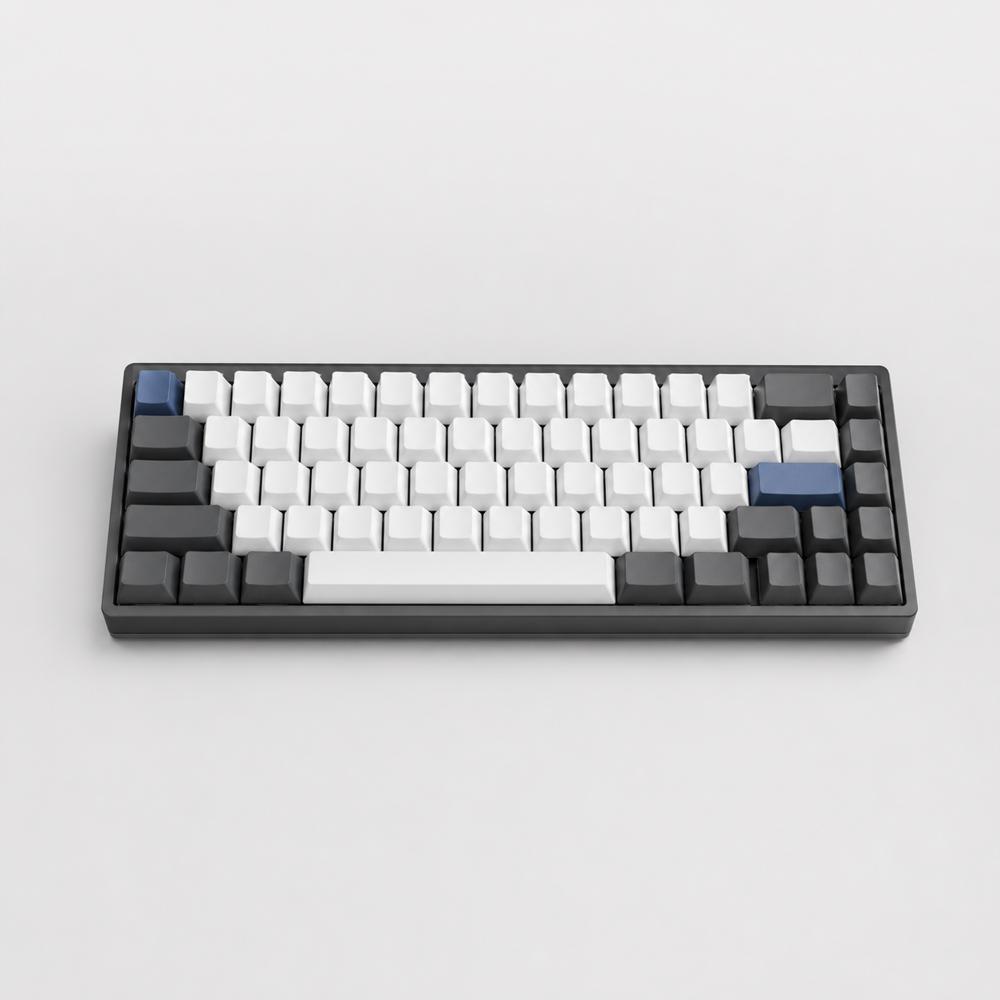

Produtividade
Notebook Corporativo
Equipamento para produtividade, estudos e trabalho remoto.
Uma vitrine simples, automatizada e preparada para demonstrar deploy, backup, monitoramento e operações em um servidor Apache containerizado.
Este site representa uma aplicação estática de um pequeno e-commerce, publicada em um servidor Apache dentro de um container Linux Ubuntu. O foco do projeto é mostrar organização operacional, automação e uma entrega visual mais profissional.
Equipamento para produtividade, estudos e trabalho remoto.
Periférico ergonômico para uso diário no escritório.

Teclado voltado para digitação, produtividade e programação.
O ambiente possui scripts para atualizacao do sistema, instalacao do Apache, backup, deploy, monitoramento, usuários, permissões e relatório operacional.
Conhecer detalhes do projeto